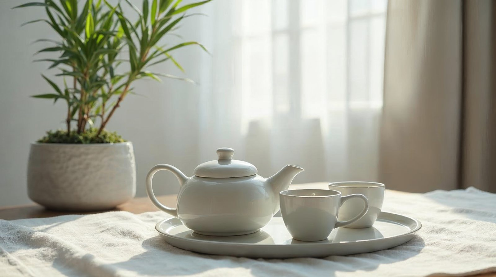
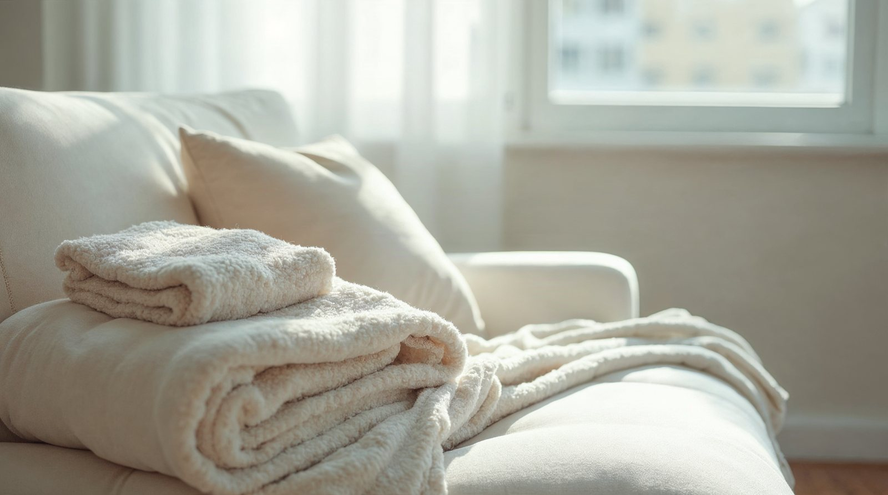
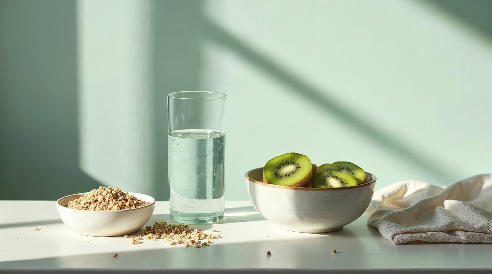
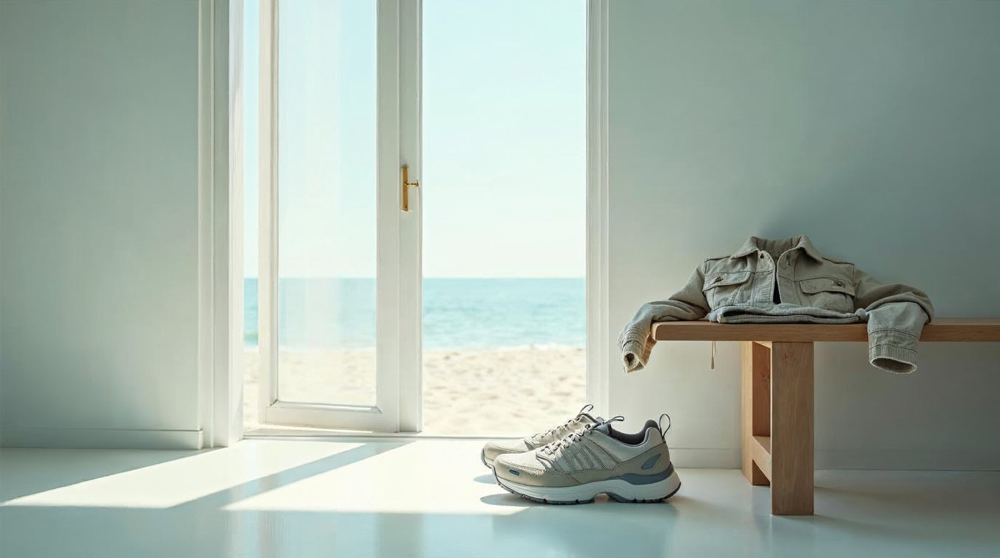

이종호 한의사 감수좋은꿈참사랑한의원 대표원장 (한의사 면허번호 19769)발행 2026-11-26 · 수정 2026-11-27
이 글의 차례
아침에 화장실에 다녀왔는데 십 분도 지나지 않아 다시 신호가 와요. 앉아 보면 나오는 건 조금뿐이고, 일어서면 또 덜 본 것 같은 느낌이 남습니다. 출근길 지하철을 타기 전에 한 번, 회사에 도착해서 또 한 번. 하루 종일 화장실 위치를 먼저 떠올리며 움직이게 되시죠.
진료실에서 이 불편을 꺼내시는 분들은 대개 조심스럽게 말씀을 시작하세요. 대변 얘기는 가족에게도 하기 어렵다 보니 오래 혼자 견뎌 오신 경우가 많거든요. 저는 대변의 모양과 횟수가 몸의 리듬을 알려 주는 중요한 단서라고 먼저 말씀드리고, 편하게 얘기를 이어가요. 쑥스러운 단어는 손짓이나 메모로 대신하셔도 괜찮아요.
변을 보고 나서도 시원하지 않고 덜 나온 것 같은 느낌을 잔변감이라고 불러요. 잔변감은 하루에 여러 번 화장실을 찾는 일과 짝을 이루는 경우가 많아요. 덜 본 것 같으니 다시 앉고, 힘을 주어도 조금만 나오니 또 남은 느낌이 드는 고리가 만들어지거든요.
그러니까 사실은 두 개가 다른 얘기예요. 잔변감은 실제로 변이 남아 있는 경우도 있고, 장과 항문 주변이 예민해져 남아 있는 것처럼 느끼는 경우도 있어요. 연기가 조금만 나도 울리도록 예민해진 화재경보기가, 불이 없어도 자꾸 울리는 것과 비슷하죠. 저는 어느 쪽인지, 그리고 그 뒤에 무엇이 있는지를 함께 나눠 보는 것부터 시작해요.
잔변감은 어떤 모습으로 나타나나요?
말씀하시는 표현은 다양합니다. 덜 본 것 같다, 뭔가 걸려 있는 것 같다, 항문 쪽이 묵직하다, 다시 가야 할 것 같다, 힘을 주어도 끝까지 안 나온다. 모두 장의 끝부분과 항문 주변에서 느껴지는 불편입니다.
변의 모양도 함께 살핍니다. 토끼 똥처럼 작고 단단한 변이 조금씩 나오는지, 가늘고 납작한 변인지, 무르고 흩어지는 변인지, 점액이 섞여 나오는지에 따라 살펴볼 방향이 달라집니다. 변기 물에 뜨는지 가라앉는지까지 말씀해 주시는 분도 있는데, 그것도 도움이 됩니다.
하루 중 흐름도 단서가 됩니다. 아침에 몰아서 여러 번 가는 분이 많고, 식사 직후에 신호가 오는 분, 긴장한 자리에서만 화장실이 급해지는 분도 계십니다. 잠든 동안에는 깨지 않는지, 밤에도 화장실 때문에 깨는지도 함께 여쭙습니다.
왜 변을 보고 나도 개운하지 않을까요?
장이 예민해진 경우가 가장 흔합니다. 과민성 장 증후군이 있는 분은 장의 끝부분이 작은 자극에도 민감하게 반응해, 변이 조금만 내려와도 급한 신호가 오고 다 본 뒤에도 남아 있는 느낌이 듭니다. 긴장하거나 찬 음식을 먹은 날 더 심해지는 것이 특징입니다.
변의 굳기도 큰 몫을 합니다. 변이 단단하면 한 번에 다 나오지 못하고 조각조각 나뉘어 나오니, 다 본 것 같지 않은 느낌이 남습니다. 반대로 변이 너무 무르면 장이 금방 다시 신호를 보내 하루에 여러 번 화장실을 찾게 됩니다.
배변 자세와 습관도 영향을 줍니다. 변기에 앉아 휴대폰을 보며 오래 머물고, 힘을 세게 주는 습관은 항문 주변 혈관과 근육에 부담을 주어 묵직한 느낌을 키웁니다. 바쁜 아침에 신호를 참고 미루는 습관도 장의 리듬을 흐트러뜨립니다.
항문과 골반 근육 쪽 원인도 있습니다. 치질이 있으면 부은 혈관이 무언가 남아 있는 것처럼 느껴지게 하고, 배변할 때 풀려야 할 골반 아래 근육이 오히려 조여 있으면 힘을 주어도 끝까지 나오지 않습니다. 출산 뒤나 나이가 들면서 골반 아래가 약해진 분도 잔변감을 자주 말씀하십니다.
장염을 앓고 난 뒤, 항생제를 오래 드신 뒤, 장 수술을 받으신 뒤에도 한동안 장이 예민하게 반응할 수 있습니다. 이런 분은 이전과 달라진 시기를 분명하게 기억하시는 경우가 많아, 그 시기를 꼭 함께 여쭙습니다.
드시는 약과 음식도 살핍니다. 일부 당뇨약, 마그네슘이 든 영양제, 변을 무르게 하는 약, 커피와 유제품, 당알코올이 든 무가당 간식은 변을 무르게 하거나 장을 자주 움직이게 할 수 있습니다. 새로 시작한 것이 있다면 그 시기와 잔변감이 시작된 시기를 함께 견주어 봅니다.
비슷해 보이지만 다른 불편과는 어떻게 다른가요?
설사는 변이 묽고 양이 많아 여러 번 보는 것이고, 잔변감과 함께 오는 잦은 배변은 한 번에 나오는 양이 적고 시원하지 않은 것이 특징입니다. 하루 횟수가 같아도 모양이 다르면 살펴볼 방향이 달라집니다.
변비는 변이 단단하고 횟수가 줄어드는 것이 중심입니다. 다만 변비가 있는 분이 조금씩 여러 번 보면서 잔변감을 느끼는 경우가 많아, 둘이 겹치기도 합니다. 일주일 동안의 횟수와 굳기를 함께 보아야 어느 쪽이 큰지 알 수 있습니다.
변을 보고 싶은데 실제로는 거의 나오지 않는 느낌이 반복된다면 장의 끝부분 자체를 살펴야 합니다. 이런 경우에는 대장 검사를 받은 지 오래되었는지 꼭 함께 확인합니다.

한의학에서는 이 불편을 어떻게 보나요?
한의학에서는 변을 보고도 시원하지 않고 뒤가 무거운 느낌을 이급후중이라는 말로 설명해 왔습니다. 배는 급하게 신호를 보내는데 정작 뒤는 묵직하게 남아 있는 상태입니다. 장 안에 습한 기운과 열이 머물거나, 기운의 흐름이 막혀 아래로 시원하게 내려가지 못하는 모습으로 봅니다.
같은 잔변감이라도 배가 차고 무른 변을 자주 보며 기운이 없는 분이 있고, 아랫배가 단단하게 뭉치고 긴장하면 화장실이 급해지는 분이 있습니다. 저는 변의 모양과 함께 배의 온도, 긴장, 잠, 소화를 함께 읽습니다.
이런 살핌은 대장내시경이나 혈액 검사를 대신하는 것이 아닙니다. 검사로 큰 이상을 먼저 확인하고, 그 위에서 장의 리듬과 긴장, 몸 전체의 균형을 함께 살피는 방법이라고 생각해 주시면 됩니다.
잔변감을 두고 자주 헷갈리는 것
첫째, 남은 것 같으니 끝까지 힘을 주어 다 빼내야 한다는 생각입니다. 세게 오래 힘을 주면 항문 주변 혈관이 부어 묵직한 느낌이 더 커질 수 있습니다. 5분 안에 나오지 않으면 일단 일어나셨다가 다음 신호를 기다리시길 권합니다.
둘째, 하루에 여러 번 가면 장이 깨끗해지니 좋다는 생각입니다. 횟수 자체보다 시원함과 변의 모양이 더 중요합니다. 조금씩 여러 번 보면서 늘 개운하지 않다면 살펴볼 일입니다.
셋째, 장에 좋다는 음식을 한꺼번에 많이 드시는 경우입니다. 섬유질이나 유산균 제품을 갑자기 많이 늘리면 오히려 가스와 더부룩함, 잦은 배변이 생기기도 합니다. 새로운 음식은 조금씩, 일주일 간격으로 늘려 보세요.

계절과 생활에 따라 달라지는 장의 리듬
겨울에는 배가 차가워지고 물을 덜 마시면서 변이 단단해지기 쉽고, 여름에는 찬 음식과 음료로 장이 예민해져 무른 변을 자주 보는 분이 많습니다. 같은 분이라도 계절마다 잔변감의 모양이 달라질 수 있습니다.
출근 시간이 이르거나 교대 근무를 하시는 분은 아침에 화장실에 앉을 여유가 없어 신호를 참는 일이 잦습니다. 시험이나 마감처럼 긴장이 이어지는 시기에는 장이 먼저 반응해 화장실을 자주 찾게 되기도 합니다. 이런 시기일수록 아침에 10분 일찍 일어나 화장실에 앉을 여유를 만들어 두면, 하루가 덜 쫓기듯 시작될 수 있습니다.
먼저 이렇게 여쭙니다
처음 오시면 대략 이런 순서로 여쭙니다. 미리 떠올려 오시면 이야기가 수월해집니다.
- 잔변감은 언제부터, 하루에 화장실은 몇 번 가시나요?
- 변의 굳기와 모양은 어떤가요? 점액이 섞이지는 않나요?
- 변기에 한 번 앉으면 얼마나 머무시나요? 힘을 세게 주시나요?
- 긴장하거나 찬 음식을 먹은 날 더 심해지나요?
- 항문 통증이나 출혈, 치질이 있었나요?
- 마지막으로 대장 검사를 받으신 때는 언제인가요?
모든 질문에 정확히 답하지 못하셔도 괜찮습니다. 일주일 동안의 화장실 횟수와 변의 모양만 대략 떠올려 오셔도 이야기의 절반은 시작된 셈입니다.

일상에서 먼저 해 볼 수 있는 것
장의 리듬을 일정하게 하고, 변의 굳기를 알맞게 맞추며, 항문 주변의 부담을 덜어 주는 것이 첫걸음입니다. 하나씩 골라 일주일씩 해 보세요.
- 아침 식사 뒤 10~15분쯤 지나 화장실에 앉아 보는 시간을 정해 두기
- 변기에 앉을 때 발밑에 낮은 받침대를 두어 무릎을 엉덩이보다 높이기
- 휴대폰은 들고 들어가지 않고, 5분 안에 안 나오면 일어나기
- 물은 하루에 나눠 마시고, 채소와 잡곡은 조금씩 늘리기
- 찬 음료와 아주 매운 음식, 술은 불편한 기간에 줄이기
- 하루 20~30분 걷기로 장을 움직여 주기
배변할 때는 숨을 참고 세게 힘을 주기보다, 입으로 천천히 숨을 내쉬며 배를 부드럽게 내미는 느낌으로 힘을 주어 보세요. 몸을 조금 앞으로 숙이고 팔꿈치를 무릎에 얹는 자세는 장의 끝부분을 곧게 펴 주어 도움이 될 수 있습니다.
배를 따뜻하게 하는 것도 장을 편하게 합니다. 잠들기 전 따뜻한 손바닥으로 배꼽 주위를 시계 방향으로 천천히 쓸어 주고, 아랫배를 차갑게 두지 않도록 해 주세요. 따뜻한 물에 엉덩이를 담그는 좌욕도 항문 주변의 묵직함을 덜어 줄 수 있습니다.
화장실을 다녀온 뒤에도 남은 느낌이 들면 바로 다시 앉기보다 잠시 걷거나 다른 일을 해 보세요. 그 느낌에 마음을 덜 쓰는 것만으로도 다시 찾는 횟수가 줄어드는 경우가 있습니다.
한의원에서 함께 살필 수 있는 경우
- 대장 검사에서 큰 이상은 없다는데 잔변감과 잦은 배변이 이어지는 경우
- 긴장하거나 찬 음식을 먹으면 화장실이 급해지는 경우
- 배가 차고 무른 변을 자주 보며 기운이 없는 경우
- 장염이나 항생제 복용 뒤로 장이 예민해진 경우
- 잔변감 때문에 외출과 출근이 부담스러워진 경우
좋은꿈참사랑한의원에서는 모든 분의 맥을 먼저 짚으며 아래 '먼저 확인이 필요한' 신호가 없는지 함께 살피고, 혀와 배를 봅니다. 배변 자세와 관련이 있어 보이면 허리와 골반 주변의 긴장도 함께 살핍니다.
진찰한 내용을 바탕으로 침, 온열 관리, 한약 상담 가운데 지금 상태에 맞는 것을 정하고, 배변 습관과 식사, 긴장 가운데 바꿔 볼 것 하나를 함께 고릅니다. 한약을 상의할 때는 드시는 약을 모두 확인하고 신중하게 정합니다. 임신 중이라면 먼저 알려 주시고 산부인과와 상의해 주세요.
내과나 항문외과에서 받고 계신 진료와 처방받은 약은 그대로 이어 가시고, 약은 처방한 선생님과 상의 없이 멈추지 마세요. 대장 검사를 받은 지 오래되었다면 검사 시기도 그곳에서 상의해 보시길 권합니다.
이렇게 기록해 오시면 상담이 쉬워집니다
장의 리듬은 일주일 단위로 보아야 모양이 드러납니다. 1~2주만 간단히 적어 보세요.
- 화장실에 간 시각과 횟수
- 변의 굳기와 모양(단단함, 보통, 무름, 묽음)
- 시원했는지, 남은 느낌이 있었는지
- 그날 먹은 찬 음식, 매운 음식, 술, 유제품
- 긴장했거나 바빴던 날, 잠이 짧았던 날 표시
- 점액이나 피가 묻었는지
기록을 나란히 놓고 보면 시원했던 날과 개운하지 않았던 날의 차이가 보이기 시작합니다. 아침에 여유가 있었던 날, 따뜻한 음식을 먹은 날, 긴장이 덜했던 날에 시원했다면 그것이 다음에 이어 갈 생활의 실마리가 됩니다.

화장실 위치부터 떠올리시는 분께
잔변감과 잦은 배변은 남에게 말하기 어려워 오래 혼자 견디시는 불편이에요. 외출 전에 화장실을 몇 번씩 다녀오고, 먼 길을 피하게 되면서 생활의 반경이 좁아지기도 하죠. 저는 그 불편이 일상에 얼마나 큰 자리를 차지하고 있는지부터 여쭤보고 시작해요.
장의 리듬은 하루아침에 달라지기보다, 시원한 날이 조금씩 늘고 화장실을 찾는 간격이 길어지는 모양으로 변하는 경우가 많아요. 하루 이틀 다시 잦아지는 날이 있어도 괜찮아요. 원래 그렇게 오르내리면서 바뀌어 가는 거예요.
장을 살피는 건 제가 맡을게요. 대신 하나만 부탁드려요. 아침 화장실 시간 정하기와 발밑 받침대 두기 가운데, 이번 주엔 하나만 골라 주세요. 딴 건 하시던 대로 편하게 하셔도 돼요.
다음에 오시면 그 기록을 함께 펼쳐 볼게요. 궁금한 건 손짓이든 메모든, 편한 방법으로 물어보세요.
이런 증상은 먼저 확인이 필요합니다
- 변에 피가 섞이거나 검은 변이 나오는 경우, 또는 체중이 이유 없이 빠지는 경우
- 배가 심하게 아프고 부풀면서 변과 방귀가 전혀 나오지 않거나, 열과 함께 피 섞인 설사가 이어지는 경우
이런 신호가 있으면 한의원보다 가까운 병원이나 응급실을 먼저 찾으세요.
함께 읽으면 좋은 글
- 배가 자주 아프고 설사·변비가 반복되는 과민성 장 증후군은 어떻게 살피나요?
- 치질 때문에 항문이 붓고 피가 묻어날 때 무엇을 구분하고 어떻게 살피나요?
- 장염을 앓고 난 뒤 장이 예전 같지 않을 때, 회복기에는 무엇을 살피나요?
- 시험 스트레스로 변비나 속 쓰림이 올 때는 무엇을 살피나요?
- 허리가 아파서 왔는데 대변과 소변은 왜 묻나요?

여쭙는 것
- 잔변감은 언제부터, 하루에 화장실은 몇 번 가시나요?
- 변의 굳기와 모양은 어떤가요? 점액이 섞이지는 않나요?
- 변기에 한 번 앉으면 얼마나 머무시나요? 힘을 세게 주시나요?
생활에서 해 볼 것
- 아침 식사 뒤 10~15분쯤 지나 화장실에 앉아 보는 시간을 정해 두기
- 변기에 앉을 때 발밑에 낮은 받침대를 두어 무릎을 엉덩이보다 높이기
- 휴대폰은 들고 들어가지 않고, 5분 안에 안 나오면 일어나기
한의원에서 함께 살필 것
- 대장 검사에서 큰 이상은 없다는데 잔변감과 잦은 배변이 이어지는 경우
- 긴장하거나 찬 음식을 먹으면 화장실이 급해지는 경우
- 배가 차고 무른 변을 자주 보며 기운이 없는 경우
먼저 확인이 필요한 신호
- 변에 피가 섞이거나 검은 변이 나오는 경우, 또는 체중이 이유 없이 빠지는 경우
- 배가 심하게 아프고 부풀면서 변과 방귀가 전혀 나오지 않거나, 열과 함께 피 섞인…
한눈에 보는 표
| 구분 | 핵심 |
|---|---|
| 여쭙는 것 | 잔변감은 언제부터, 하루에 화장실은 몇 번 가시나요? 변의 굳기와 모양은 어떤가요? 점액이 섞이지는 않나요? |
| 생활에서 해 볼 것 | 아침 식사 뒤 10~15분쯤 지나 화장실에 앉아 보는 시간을 정해 두기 변기에 앉을 때 발밑에 낮은 받침대를 두어 무릎을 엉덩이보다 높이기 |
| 한의원에서 함께 살필 것 | 대장 검사에서 큰 이상은 없다는데 잔변감과 잦은 배변이 이어지는 경우 긴장하거나 찬 음식을 먹으면 화장실이 급해지는 경우 |
| 먼저 확인이 필요한 신호 | 변에 피가 섞이거나 검은 변이 나오는 경우, 또는 체중이 이유 없이 빠지는 경우 배가 심하게 아프고 부풀면서 변과 방귀가 전혀 나오지 않거나, 열과 함께 피 섞인 설사가 이어지는 경우 |
자주 묻는 질문
하루에 화장실을 세 번 넘게 가면 문제가 있는 건가요?
횟수만으로 정하기보다 변의 모양과 시원함을 함께 봅니다. 하루 여러 번이라도 시원하고 모양이 일정하다면 그 사람의 리듬일 수 있고, 조금씩 여러 번 보며 늘 개운하지 않다면 함께 살펴봅니다.
잔변감이 있으면 대장내시경을 꼭 받아야 하나요?
나이, 마지막 검사 시기, 변의 모양 변화, 피가 섞였는지에 따라 달라집니다. 검사를 받은 지 오래되었거나 변의 모양이 달라졌다면 내과에서 검사 시기를 상의해 보시길 권합니다.
유산균을 먹으면 잔변감이 줄어드나요?
도움이 된다고 느끼는 분도 있고 오히려 가스가 늘었다는 분도 있습니다. 드신다면 한 가지를 정해 2~4주 정도 기록하며 몸의 반응을 보시길 권합니다.
치질 때문에 잔변감이 생길 수도 있나요?
부은 혈관이 무언가 남아 있는 느낌을 줄 수 있습니다. 항문 통증이나 출혈이 함께 있다면 항문외과 진료를 먼저 받아 보시고, 배변 습관과 장의 리듬을 함께 살핍니다.
좋은꿈참사랑한의원은 재진 때 지난번 이야기부터 이어서 여쭙니다. 진료시간과 예약은 오시는 길에서 확인하세요.
어디서 상담받을 수 있나요?
좋은꿈참사랑한의원은 서울 동작구 만양로2길 2 신성빌딩 3층·5층(서울 동작구 상도동, 7호선 상도역 3번 출구 근처)에 있습니다. 한의사 3명(이종호 대표원장, 조영기 수석진료원장, 정원영 진료원장)이 진료합니다. 진료시간은 평일 09:30~20:00(점심 13:00~14:00), 토·일·공휴일 09:30~15:00이며, 방문 전 전화로 확인을 권합니다. 예약은 네이버 예약, 카카오톡 상담, 전화 02-815-7510로 받습니다.
이 글은 일반적인 건강 정보이며 개인의 진단이나 치료를 대신하지 않습니다. 증상이 있거나 복용 중인 약이 있다면 진료를 통해 확인하세요. 치료 효과는 개인마다 다를 수 있습니다.
작성 기준: 일반적으로 알려져 있는 건강 정보를 참고해 정리했습니다(대표원장 감수). 증상 기록은 1~2주 동안 하루 1회, 비슷한 시간에 적어 오시면 지난 상태와 비교하기 쉽습니다.